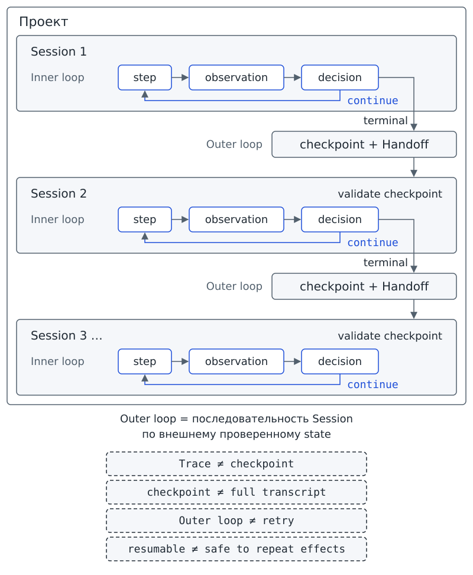
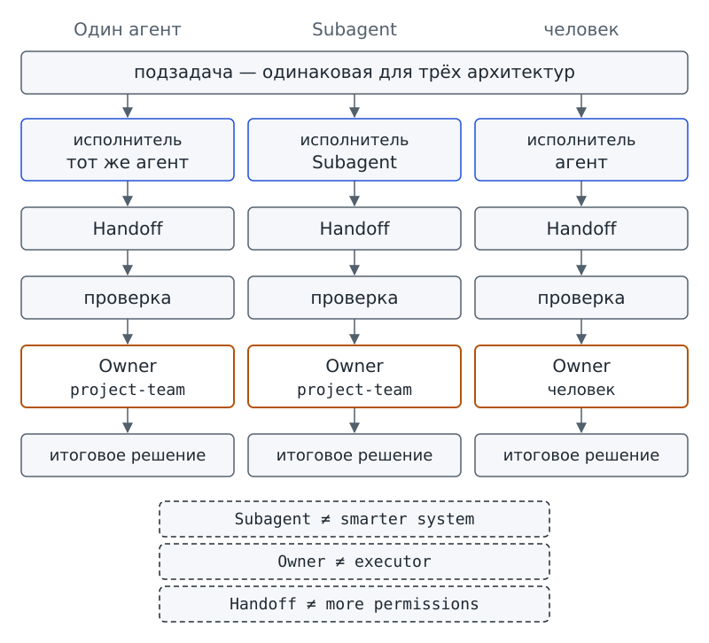

Глава 16. Долгая и совместная работа¶
С чего всё началось¶
До Фестиваля науки осталось совсем немного времени. На доске проектного бюро уже около трёхсот карточек. Часть карточек проверена, часть ждёт данных, а часть ещё даже не открывали. Программа «Дежурный» начинает очередную проверку, делает два шага и останавливается по установленному пределу. Компьютер выключают. На следующий день Марк открывает программу снова и пишет: «Продолжай оттуда, где остановился».
Но новый процесс не обязан помнить вчерашние объекты Python — данные, с которыми программа работала в памяти. Активный контекст и последняя реплика тоже не обязаны сохраняться после остановки. На диске остались карточки проекта, Trace прошлого запуска и маленький файл состояния. На листе передачи есть ещё поле Owner, но команда пока не разбирала его назначение.
Марк смотрит на сохранённые материалы и спрашивает: какой из файлов позволит новому запуску установить, что уже произошло и что делать дальше? Аня добавляет второй вопрос: если часть работы отдать другому исполнителю, кто потом отвечает за итоговое решение?
Так появляется Session / сессия — один ограниченный по времени и контексту запуск работы системы.
Session, или сессия, начинается, когда программа приступает к очередному участку работы, и заканчивается при остановке рабочего запуска. Внутри одной Session система может сделать несколько действий: у «Дежурного» в начальной сцене было два шага, но один запуск. Следующая Session не получает автоматически сведения о предыдущей.
Вопрос-Прогноз. Если работа не помещается в одну Session, что должно пережить остановку процесса, чтобы следующий запуск мог продолжить её без догадок и без повторного выполнения уже завершённого действия? Запиши прогноз до практики.
Запиши ещё один прогноз для второго урока: если подзадачу можно передать отдельному исполнителю, станет ли система автоматически быстрее, точнее или безопаснее? После практики ты сравнишь ожидание с наблюдением.
Главный вопрос главы. Как продолжать проект между сессиями и участниками?
Фигура 46. Триста карточек и новый запуск
После главы ты сможешь¶
- объяснять, почему новый запуск не продолжает работу только благодаря «памяти модели»;
- различать работу внутри одного запуска и работу между несколькими запусками;
- проверять, достаточно ли сохранённого состояния для честного продолжения;
- объяснять, почему повторяемый запуск не должен повторно применять уже выполненный эффект;
- собирать краткую передачу работы без полной стенограммы и secrets;
- сравнивать варианты «один исполнитель / отдельный исполнитель / человек» и называть ответственность за итог;
- отличать наблюдаемый факт от правила выбора, предположения и заранее записанного ожидания.
Урок 31. Один проект — несколько запусков¶
1. Два масштаба работы¶
В знакомом тебе agent loop действие даёт observation. После наблюдения система принимает решение: продолжить работу или завершить запуск с определённым terminal. Механизм остаётся прежним; теперь мы рассматриваем последовательность шагов в пределах одной Session.
Inner loop — agent loop внутри одного запуска.
Название Inner loop переводится как «внутренний цикл». Цикл назван внутренним по отношению к Session: шаги выполняются внутри одного запуска. Новый алгоритм или ещё один while добавлять не требуется.
Проверь себя на ходу. Если один запуск сделал три шага agent loop и остановился, сколько было Session и сколько Inner loop? Что здесь нельзя считать тремя Session?
Представь продолжение работы бюро: после остановки нужное состояние сохранили, программу закрыли, а затем запустили снова. Новый запуск проверил сохранённые данные, выполнил ещё один ограниченный Inner loop и снова сохранил состояние. Теперь мы рассматриваем не шаги одного запуска, а связь между запусками.
Outer loop — повторение отдельных запусков, каждый из которых продолжает работу по сохранённому внешнему состоянию.
Outer loop означает «внешний цикл». Отдельные Session связаны проверяемым состоянием, а не непрерывной работой одного процесса. Каждый запуск ограничен. Между запусками программа проверяет состояние, и решение о продолжении принимается явно; бесконечная работа из такой последовательности не следует.
Схема показывает оба масштаба: шаги находятся внутри Session, а checkpoint и Handoff связывают отдельные запуски:
Проект
│
├── Session 1
│ Inner loop
│ step → observation → decision
│ ↓
│ checkpoint + Handoff
│
├── Session 2
│ validate checkpoint
│ Inner loop
│ ↓
│ checkpoint + Handoff
│
└── Session 3 …
Outer loop = последовательность Session по внешнему проверенному state
Схему дополняют пять границ:
Trace ≠ checkpoint
checkpoint ≠ full transcript
Handoff ≠ more permissions
more agents ≠ more intelligence
resumable ≠ safe to repeat effects
В этих строках full transcript означает полную стенограмму, а more permissions — дополнительные разрешения. Последняя строка отделяет возможность продолжить работу от безопасности повторного действия. Даже пригодное для продолжения состояние не разрешает заново выполнить любой прошлый эффект, например ещё раз применить изменение карточки.

Фигура 47. Inner loop внутри Session, Outer loop между Session
2. Какое состояние действительно позволяет продолжить¶
В главе 10 ты использовал Checkpoint — сохранённое состояние, по которому работу можно продолжить после прерывания. Что должен получить новый запуск, чтобы такого состояния действительно хватило? Программа должна проверить уже сделанное и определить следующий шаг по записи, а не по догадке.
Resumable state / возобновляемое состояние — сохранённое вне процесса состояние, которого достаточно, чтобы новый запуск проверил, что уже сделано, и продолжил с явно записанного следующего шага.
Resumable state, или возобновляемое состояние, содержит проверяемые поля для продолжения. Полный чат, весь Trace и внутренние рассуждения модели для этого не требуются. Нужны данные, без которых нельзя обоснованно выбрать следующий шаг.
Допустим, группа проверила 12 из 20 карточек в произвольном порядке. Запись «проверено 12» позволяет вычислить, что осталось восемь, но не позволяет назвать оставшиеся карточки. Для продолжения нужны сведения о том, какие карточки уже проверены, и явно записанный следующий шаг. Одного счётчика недостаточно.
Сравни два случая starter из главы 10. В первом случае сохранённое состояние проходит проверку:
# запуск из корня starter
python state_demo.py resume workspace/ch10/cases/project_state_ready.json
checkpoint: loaded
project: science-festival
status: needs_input
blocked tasks: task-003
next step: После ответа снова проверить task-003
result: resumable
Важна не сама строка resumable, а напечатанный рядом next step. В следующем шаге указано не только действие, но и условие: снова проверить task-003 после ответа. Программа может принять такую запись без восстановления смысла по последней фразе чата. Сам вывод показывает принятие checkpoint, а не выполнение повторной проверки карточки.
Во втором случае в сохранённом состоянии не хватает поля:
# запуск из корня starter
python state_demo.py resume workspace/ch10/cases/project_state_missing_next_step.json
checkpoint: not accepted
error: missing field next_step
result: not resumable
Программа отказывает в продолжении, а не придумывает недостающий шаг. Если checkpoint настроенного «Дежурного» не проходит такую проверку (например, в нём нет next_step), команда run останавливается до Inner loop с ошибкой конфигурации и кодом возврата 2. Следовательно, JSON становится основой продолжения только после проверки; одного существования файла недостаточно.
3. Trace не заменяет checkpoint¶
Trace отвечает на вопрос «что наблюдаемо происходило во время запуска». Журнал может содержать запросы tool и observations, ошибки и подтверждения, а также terminal. По событиям можно разбирать сбой. Для продолжения нужен другой ответ: какое состояние сейчас актуально и что допустимо делать дальше?
Представь лабораторный журнал из двадцати страниц. По записям можно восстановить вчерашние измерения. Но начать сегодняшнюю работу удобнее с таблицы актуальных значений и пометки «следующее измерение — № 7». Двадцать страниц описывают историю, а одна пометка называет ближайшее действие. В сравнении журнал соответствует Trace, а таблица с пометкой — checkpoint. Сходство ограничено назначением записей: программный checkpoint проверяется формально, лабораторная таблица может быть просто записью человека.
Поэтому полный Trace не заменяет checkpoint. Получив только историю, новый процесс всё равно должен был бы установить, какое из описанных состояний считать текущим и какой шаг допустим дальше. Сохранённый checkpoint нужен именно для продолжения, а не для подробного пересказа прошлого запуска.
4. Практика A: передай работу без вчерашней беседы¶
Учитель раздаёт четырём группам одинаковые материалы:
- карточки «сделано», «проверено», «ожидает ответа», «следующий шаг»;
- один пригодный checkpoint;
- один неполный checkpoint;
- карточку Trace с событиями прошлого запуска;
- карточку Handoff без полной стенограммы.
Первая пара выбирает только материалы, необходимые следующему запуску. Вторая пара получает выбранные материалы без исходной беседы и определяет, что уже сделано, что проверено и какой следующий шаг допустим. Выполни со своей группой назначенную часть работы.
В отдельном задании найди ошибку. Группа получает файл со статусом, списком задач и строкой «мы почти закончили, завтра продолжим» вместо next_step. Объясни, почему файл нельзя считать готовым к продолжению; не подставляй действие, которое кажется тебе очевидным.
После обмена листами сравни со своей группой данные, которые хотелось сохранить «на всякий случай», с данными, которые действительно понадобились получателям.
Обе пары используют инструкцию восстановления после прерывания:
1. Заверши текущую Session в наблюдаемом состоянии.
2. Сохрани проверяемый checkpoint вне процесса.
3. Не сохраняй secrets и полную стенограмму «на всякий случай».
4. Новый запуск сначала проверяет checkpoint.
5. Продолжай только с явно записанного next_step.
6. Не повторяй уже зафиксированную завершённую операцию.
Результат практики A: инструкция восстановления из шести пунктов, где к каждому пункту группа приписала пример из своих материалов, и handoff на одной странице, по которому другая группа продолжает работу без доступа к вчерашнему чату.
5. Практика B: три запуска «Дежурного» и один checkpoint¶
Сначала подготовь план долгой работы: скопируй шаблон workspace/my_agent/templates/16_run_plan.json в workspace/my_agent/16_run_plan.json. В шаблоне записаны три поля:
{
"max_sessions": 2,
"checkpoint": "drafts/my_agent/run_state.json",
"owner": "project-team"
}
Разбери назначение каждого поля:
max_sessionsзадаёт учебный предел числа Session;checkpointуказывает относительный путь только внутриdrafts/;ownerназывает роль, которая решает, что делать после остановки.
В шаблоне разрешены две Session. Для обязательной проверки подготовлена фикстура с таким же форматом, но лимитом 3 и другим путём checkpoint.
Следующий вывод status относится к этой фикстуре, а не к неизменённому шаблону. Комментарий о фикстуре обозначает подстановку файла; сам комментарий ничего не копирует. Найди в строке вывода значения трёх полей плана:
# запуск из корня starter
# фикстура: tests/fixtures/ch16/16_run_plan.json -> workspace/my_agent/16_run_plan.json
python dezhurny.py status --chapter 16
dezhurny: status
config: workspace/my_agent
глава 16 | 16_run_plan.json | настроено: max_sessions 3; checkpoint drafts/ch16/run_state.json; owner project-team | run: Session с checkpoint; после max_sessions — остановка до цикла
Основной опыт использует отдельный случай workspace/ch16/cases/long-work/. В показанном опыте checkpoint ещё нет, лимит Session равен двум, а предел Inner loop составляет два шага. За одну Session вся работа не завершается.
Три следующие команды должны идти именно подряд: вторая читает checkpoint первой, а третья обнаруживает исчерпанный лимит Session. Не смешивай лимит этого случая с лимитом 3 из предыдущего вывода status.
Запусти программу для первой Session:
# запуск из корня starter
python dezhurny.py run --dir workspace/ch16/cases/long-work
dezhurny: run
goal: Проверить все карточки доски за несколько Session и передать сводку команде
config: workspace/ch16/cases/long-work
model: replay — авторский сценарий, не запись модели
scenario: success
stop_policy: max_steps 2, max_retries 1
tools: allowlist диспетчера (по умолчанию, глава 7)
session: 1/2 | checkpoint: нет — первая Session
Шаг 1 | read_task_cards | continue
Шаг 2 | validate_task_card | limit
Остановка: limit
contract: не настроено (глава 5)
save: не настроено (глава 3)
state: не настроено (глава 10)
trace: не настроено (глава 12)
checkpoint: saved | drafts/ch16/run_state.json | status limit | next step: Новая Session: снова прочитать карточки и продолжить проверку
handoff: build_handoff — поля project, goal, status, blocked_tasks, next_step | transcript: no | secrets: 0 | owner: project-team
Качество модели не подтверждено этим техническим прогоном.
Сравни имя сценария с итогом запуска. scenario: success называет подготовленный replay-сценарий среды. Но наблюдаемый terminal этой Session равен limit: программа выполнила два шага при max_steps, равном 2.
После остановки harness сохраняет checkpoint и строит знакомый по главе 10 Handoff / передачу работы — структурированную передачу следующему исполнителю или запуску состояния, результатов и необходимых ограничений. В данном случае Handoff связывает завершённую Session со следующим запуском.
Запусти программу заново для второй Session:
# запуск из корня starter
python dezhurny.py run --dir workspace/ch16/cases/long-work
dezhurny: run
goal: Проверить все карточки доски за несколько Session и передать сводку команде
config: workspace/ch16/cases/long-work
model: replay — авторский сценарий, не запись модели
scenario: success
stop_policy: max_steps 2, max_retries 1
tools: allowlist диспетчера (по умолчанию, глава 7)
session: 2/2 | checkpoint loaded | previous: limit | next step: Новая Session: снова прочитать карточки и продолжить проверку
Шаг 1 | read_task_cards | continue
Шаг 2 | validate_task_card | limit
Остановка: limit
contract: не настроено (глава 5)
save: не настроено (глава 3)
state: не настроено (глава 10)
trace: не настроено (глава 12)
checkpoint: saved | drafts/ch16/run_state.json | status limit | next step: Новая Session: снова прочитать карточки и продолжить проверку
handoff: build_handoff — поля project, goal, status, blocked_tasks, next_step | transcript: no | secrets: 0 | owner: project-team
Качество модели не подтверждено этим техническим прогоном.
Какая строка показывает связь двух запусков? checkpoint loaded | previous: limit появилась только во второй Session: программа загрузила сохранённое состояние и прочитала прежний terminal.
Между Session в checkpoint сохраняются sessions_used, прошлый terminal и next_step. Однако повторяется прежний авторский replay-сценарий, а не появляются новые ответы модели. Переход от 1/2 к 2/2 показывает учёт использованных Session. Сам по себе этот счётчик не доказывает, что проверены новые карточки: в обоих выводах напечатаны одинаковые имена двух операций.
Выполни третью команду, чтобы проверить предел Outer loop:
# запуск из корня starter
python dezhurny.py run --dir workspace/ch16/cases/long-work
dezhurny: run
goal: Проверить все карточки доски за несколько Session и передать сводку команде
config: workspace/ch16/cases/long-work
model: replay — авторский сценарий, не запись модели
scenario: success
stop_policy: max_steps 2, max_retries 1
tools: allowlist диспетчера (по умолчанию, глава 7)
outer loop: стоп — sessions 2/2 использованы; продолжение решает Owner: project-team
checkpoint: не изменён | drafts/ch16/run_state.json
Третья команда запускает программу для проверки плана, но новая рабочая Session и её Inner loop не начинаются. Программа проверяет внешний лимит до agent loop и оставляет checkpoint без изменения. При трёх обращениях к программе только два обращения дошли до Inner loop. Увеличение max_steps дало бы больше шагов внутри одной Session, а здесь ограничено число отдельных Session.
Проверь себя на ходу. В каком из трёх запусков Inner loop вообще не начался? Как это доказать по печатному выводу, не заглядывая в исходный код?
Теперь проверь отдельный механизм: защиту от повторного эффекта. В главе 14 программа уже применяла подтверждённое предложение изменения статуса. В следующем опыте одно подтверждённое предложение применяется дважды во временной копии workspace.
Опыт не даёт промышленной гарантии exactly-once — «эффект выполнится ровно один раз при любых сбоях». Проверяется только повтор одного и того же предложения:
# запуск из корня starter
python long_work_demo.py repeat
long_work: repeat
proposal: task-002 | in_progress -> done | operation_id: 689d4fcf4c7c4dbb
human_decision: approve — одно подтверждённое предложение, применяется дважды
first: applied: yes | operation_id 689d4fcf4c7c4dbb
second: applied: no | already_applied: yes | operation_id 689d4fcf4c7c4dbb
card changed: once
shipped cards changed: no
граница: учебная защита от повтора одного предложения, не exactly-once
При первом применении напечатано applied: yes, при втором — already_applied: yes и applied: no. Обе строки относятся к одному идентификатору операции. По отчёту карточка изменилась один раз, а исходные карточки комплекта не изменились.
Resumable state позволяет определить продолжение. Защита от повторного применения отдельно запрещает вновь выполнять уже применённое изменение. Два механизма связаны, но один не заменяет другой.
Результат практики B: файл 16_run_plan.json, три последовательных запуска одного учебного случая с checkpoint между первой и второй Session, наблюдаемый стоп до Inner loop на третьем запуске и объяснение строки already_applied: yes как отдельной границы повторного эффекта.
6. Мини-проверка урока 31¶
- Чем Session отличается от шага Inner loop?
- Почему название Inner loop не означает, что нужно добавить ещё один agent loop?
- Что делает Outer loop?
- Почему Trace не заменяет checkpoint?
- Какой признак делает сохранённое состояние пригодным для честного продолжения?
- Почему третья команда
runне должна переписывать checkpoint? - Почему
resumableне означает «можно снова выполнить все прошлые действия»?
Ответы¶
- Session — целый ограниченный запуск; внутри неё может быть несколько шагов.
- Это специальное имя уже знакомого agent loop, когда мы сравниваем его с работой между запусками.
- Связывает отдельные Session через сохранённое и проверенное внешнее состояние.
- Trace хранит наблюдаемые события запуска, а checkpoint — актуальное состояние для продолжения.
- Новый запуск может проверить, что уже сделано, и увидеть явно записанный
next_step. - Лимит Session проверяется до Inner loop; после исчерпания лимита состояние не должно изображать новый прогресс.
- Продолжение состояния и повторение внешнего эффекта — разные задачи; уже применённый effect может требовать отдельной защиты от повтора.
Выходной билет урока 31¶
Закончи четыре строки:
Session — это …
Inner loop — это …
Outer loop — это …
checkpoint нужен между Session, потому что …
Добавь один наблюдаемый признак из практики B, подтверждающий, что второй запуск прочитал checkpoint первого.
Урок 32. Один агент, несколько агентов или человек¶
1. Разделить работу — ещё не значит улучшить систему¶
Марк снова смотрит на триста карточек и предлагает ускорить проверку: «Если один исполнитель долго проверяет доску, пусть два делают это одновременно». На первый взгляд предложение разумно: исполнителей станет больше. Но если оба получили один и тот же старый checkpoint, каждый может считать одну и ту же карточку незавершённой. В результате могут появиться противоречащие предложения или два разных варианта продолжения.
Прежде чем выбирать число агентов, проверь устройство подзадачи:
- Можно ли отделить подзадачу от остальной работы?
- Какие входные данные нужны исполнителю?
- Какой результат исполнитель должен вернуть?
- Кто проверит результат?
- Кто отвечает за итог?
Ответы позволяют обосновать разделение работы. Само число агентов такого основания не даёт.
Обосновывая архитектурное решение, различай уже проверенное и только ожидаемое. Для этого понадобятся ещё четыре рабочие формулировки. Пока это рабочие определения этой главы.
Факт / наблюдаемый факт — утверждение, подтверждённое сохранённым артефактом: выводом команды, trace, файлом или тестом.
Для факта можно предъявить свидетельство и проверить, подтверждает ли артефакт утверждение. Уверенного объяснения модели или мнения команды без артефакта недостаточно.
Эвристика — правило выбора, которое обычно помогает, но не гарантирует результат и не является стандартом.
Эвристика помогает выбрать действие по правилу «так часто разумнее». Такое правило не гарантирует эффективности в каждом случае. Поэтому эвристику нельзя объявлять ни универсальным законом, ни обязательным стандартом.
Гипотеза — предположение о поведении системы, которое ещё предстоит проверить наблюдением.
Выдвигая гипотезу, команда предполагает некоторый эффект, но ещё не знает, получится ли его наблюдать. Проверка может не подтвердить предположение.
Прогноз — ожидание будущего результата, записанное до наблюдения и сравниваемое с ним после.
Прогноз фиксирует до проверки, какого результата ты ожидаешь. Сама предварительная запись ничего не доказывает: ценность прогноза появляется именно потому, что после наблюдения его можно сравнить с фактом. По этому принципу устроен вопрос-прогноз в начале этой и предыдущих глав.
Проверь себя на ходу. Фраза «два исполнителя обычно быстрее одного» — факт, эвристика, гипотеза или прогноз? Какой артефакт понадобился бы, чтобы сделать более сильный вывод именно о вашем проекте?
2. Когда отдельный исполнитель действительно полезен¶
Перед разделением работы используй checklist — контрольный список вопросов:
- Можно ли отделить подзадачу от итогового решения?
- Заданы ли явный вход и ограниченный контекст?
- Можно ли проверить результат подзадачи?
- Понятно ли получателю, как принять или отклонить Handoff?
- Назначена ли ответственность за итоговое решение?
Допустим, для выставочного стенда нужно проверить оборудование и решить, готов ли стенд к показу. Отдельному исполнителю можно передать два списка: требуемое и имеющееся оборудование. Исполнитель возвращает перечень расхождений, который можно сверить по входным спискам. Решение о готовности всего стенда в такую подзадачу не входит.
Subagent — отдельный ограниченный агентный запуск, которому передана конкретная подзадача и необходимый контекст.
Subagent означает «подагент». Отдельный запуск получает конкретную работу и только необходимый для неё контекст, а не весь проект. Такое разделение не доказывает, что система стала умнее, быстрее или безопаснее.
В обязательной практике этой главы второй LLM не запускается. Роль ограниченного исполнителя выполняет analyzer: программа проходит фиксированную последовательность уже существующих tools без модели и сети. Демонстрация проверяет форму передачи работы. Scripted-процедура, то есть заранее заданная последовательность шагов, не доказывает пользу настоящей системы с несколькими агентами.
3. Кто отвечает за итог¶
Один исполнитель может собрать данные, второй провести анализ, а третий принять решение. Чья ответственность сохраняется после такой передачи? Нужно явно назвать того, кто отвечает за итог, независимо от распределения отдельных действий.
Owner / владелец решения — человек или явно определённая роль, несущая ответственность за итоговое решение.
Owner, или владелец решения, отвечает за принимаемый результат, даже если часть работы выполнил другой исполнитель. Owner не обязан сам делать каждый шаг. Исполнитель подзадачи и владелец решения могут быть разными ролями.
Карта ответственности связывает подзадачу с итоговым решением:
подзадача → исполнитель → Handoff → проверка → Owner → итоговое решение
Не смешивай Owner с Human approval из главы 14. Approval обозначает решение человека по конкретному действию. Owner обозначает того, кто отвечает за итоговый результат или архитектурное решение в целом.

Фигура 48. Один агент / Subagent / человек
4. Практика A: три архитектуры на бумаге¶
Учитель раздаёт три карточки архитектур:
- «один агент»;
- «Subagent-анализатор + основной контур»;
- «агент + человек-Owner».
Отдельно учитель выдаёт четыре карточки оснований: факт, эвристика, гипотеза, прогноз. Для усложнения предусмотрены карточки границ из HR — работы с персоналом, — а также медицины, права и финансов. В этих ситуациях агент может подготовить материал, но итоговое высокорисковое решение остаётся у человека.
Для каждой архитектуры заполни вместе с группой шесть строк:
- Назови подзадачу.
- Укажи исполнителя.
- Опиши передаваемое состояние.
- Запиши результат Handoff.
- Назначь Owner.
- Укажи основание выбора.
Если основание названо фактом, укажи подтверждающий артефакт: вывод команды, Trace, файл или тест. Без наблюдаемого сравнения фраза «два агента точно лучше» не принимается как факт. Затем добавь, чего выбранное решение не доказывает.
Обменяйся листами с другой группой и найди ошибки. Проверь прежде всего, указан ли Owner и не пытается ли группа передать с Handoff полную историю, permissions или trust. Файл передачи не даёт получателю новых прав и не повышает доверие к данным.
Результат практики A: краткая архитектурная записка с полями подзадача, исполнитель, передаваемое состояние, результат Handoff, Owner, основание, что решение не доказывает.
5. Практика B: ограниченный анализатор передаёт результат Owner¶
Запусти подготовленный случай: ограниченный исполнитель анализирует карточки знакомыми tools через dispatcher и возвращает структурированный результат. Живая модель и сеть не используются.
В техническом Handoff поле basis обозначает основание утверждения. Поле evidence содержит сохранённое свидетельство для основания fact.
# запуск из корня starter
python long_work_demo.py handoff --case analyzer
long_work: handoff --case analyzer
executor: analyzer — учебный ограниченный исполнитель, не второй LLM
subtask: анализ карточек
tools: read_task_cards, validate_task_card ×3, build_status_report
handoff.result: count 3 | unfinished 2 | blocked 1
owner: project-team
constraints: permissions и trust прежние
basis: fact | evidence: observation build_status_report — «Всего задач: 3.», «Незавершённых: 2.», «Заблокированных: 1.»
model/network: not used
decision made by executor: no
result: accepted
Сопоставь basis: fact с полем evidence: в качестве свидетельства названа observation от build_status_report. В отчёте указаны три задачи, две незавершённые и одна заблокированная. Человек должен проверить, верно ли свидетельство и подтверждает ли оно утверждение. Программа проверяет только форму: указано ли evidence для fact.
Допустим, в записке утверждается «Заблокированы все три задачи», а поле evidence ссылается на строку «Заблокированных: 1.». Свидетельство названо, но число один не подтверждает утверждение о трёх задачах. Наличие поля не заменяет проверки содержания.
Поля permissions и trust не передаются как новые полномочия. Строка constraints: permissions и trust прежние указывает, что Handoff сам по себе не расширяет границы. Различие оснований видно в записи, но истинность утверждения одной записью fact не доказана.
Запусти подготовленный случай, в котором Owner отсутствует в Handoff:
# запуск из корня starter
python long_work_demo.py handoff --case missing-owner
long_work: handoff --case missing-owner
handoff: workspace/ch16/cases/architecture_missing_owner.json
executor: analyzer — учебный ограниченный исполнитель, не второй LLM
subtask: анализ карточек
owner: нет
result: not accepted — нет owner
executed: ничего — решение без Owner не принимается
Без Owner программа не принимает архитектурную передачу, даже если результат анализа мог бы выглядеть корректно. При этом наличие Owner не гарантирует правильности решения: роль делает явной ответственность, а не заменяет проверку.
Результат практики B: один принятый Handoff с basis: fact и evidence, один отклонённый Handoff без Owner и краткое объяснение, почему отдельный исполнитель не получил новые permissions и не принял итоговое решение.
6. Обязательные проверки: должен / не должен / ошибка / граница¶
Должен. Проверь три требования:
- Новый процесс загружает валидный checkpoint, а следующая Session получает предыдущий terminal и
next_step. - Архитектурный Handoff содержит Owner.
- Утверждение, названное фактом, ссылается на evidence.
Не должен. Проверь, что ограничения сохранены:
- Новый запуск не зависит от объектов Python в памяти прошлого процесса.
- Outer loop не заменён простым увеличением
max_steps. - Handoff не включает автоматически secrets и полную стенограмму, не выдаёт новых permissions и не повышает trust.
- Отдельный исполнитель не выдаёт свой результат за итоговое решение Owner.
Ошибка. При неверном плане долгой работы run не должен начинать выполнение. В следующем случае checkpoint указан вне drafts/. Команда status сообщает об ошибке и о блокировке run; сама команда run в этом показе не вызывается. Комментарий о фикстуре, как и в уроке 31, обозначает заранее подготовленную подстановку:
# запуск из корня starter
# фикстура: tests/fixtures/ch16/16_run_plan_invalid.json -> workspace/my_agent/16_run_plan.json
python dezhurny.py status --chapter 16
dezhurny: status
config: workspace/my_agent
глава 16 | 16_run_plan.json | ошибка: 16_run_plan.json: checkpoint — относительный путь внутри drafts/ | run не запускается, пока файл не исправлен
Checkpoint без next_step ты уже видел в уроке 31, §2: проверка возвращает result: not resumable. Если такой checkpoint указан в плане run, harness останавливается до Inner loop с exit 2 — кодом возврата 2, — а не продолжает по догадке.
Граница. Различай следующие механизмы и выводы:
Session ≠ step: сессия охватывает запуск, а не один шаг.Outer loop ≠ retry: последовательность запусков не равна повторной попытке внутри запуска.Trace ≠ checkpoint: история событий не заменяет актуального состояния.checkpoint ≠ full transcript: для контрольной точки состояния не нужна полная стенограмма.Handoff ≠ more permissions: передача работы не даёт новых прав.Subagent ≠ smarter system: отдельный агент не доказывает, что система стала умнее.Owner ≠ executor: ответственный за итог не обязан выполнять подзадачу.resumable ≠ safe to repeat effects: пригодность к продолжению не разрешает повторять эффекты.- Scripted demo не равно live-model evidence: авторская демонстрация не доказывает поведение живой модели.
- Учебная защита от повторного эффекта не равна промышленной гарантии exactly-once.
7. Безопасность¶
Безопасность
Долгая работа не должна расширять permissions только потому, что появился новый запуск или новый исполнитель. Через Handoff передаются нужное состояние и ограничения; сама передача не даёт новых прав и не повышает trust.
Resumable state не разрешает повторять прошлый эффект. Для операций с изменением состояния нужна отдельная защита: перед повторным применением программа проверяет состояние и идентификатор операции.
Полная стенограмма и secrets не требуются для Handoff. Передавай только данные, без которых следующий шаг нельзя выполнить или проверить.
В обязательной практике работу отдельного исполнителя показывает
analyzer: программа выполняет фиксированную последовательность существующих tools без живой модели и сети. Опыт показывает форму Handoff и назначение Owner, а не пользу настоящей системы с несколькими агентами.В кадровых, медицинских, юридических и финансовых карточках агент не принимает итогового решения. Ответственность Owner несёт человек или явно назначенная человеческая роль.
8. Мини-проверка урока 32¶
- Какие признаки подзадачи дают основание рассмотреть отдельного исполнителя вместо продолжения одним агентом?
- Что такое Subagent и чего его наличие не доказывает?
- Что такое Owner?
- Почему Owner и исполнитель подзадачи могут быть разными ролями?
- Чем факт отличается от эвристики?
- Чем гипотеза отличается от прогноза?
- Почему
basis: factв учебном Handoff требует evidence? - Что проверяет случай
missing-owner?
Ответы¶
- Когда подзадача отделима, имеет явный вход, ограниченный контекст, проверяемый результат и понятный Handoff.
- Это отдельный ограниченный агентный запуск для конкретной подзадачи; он не гарантирует рост качества, скорости или безопасности.
- Человек или явно определённая роль, отвечающая за итоговое решение.
- Исполнитель может подготовить результат, а Owner — проверить и принять итог.
- Факт подтверждён сохранённым артефактом; эвристика — полезное правило выбора без гарантии.
- Гипотеза — проверяемое предположение о поведении; прогноз — ожидание будущего результата, записанное до наблюдения и затем сравниваемое с ним.
- Иначе слово
factбыло бы только ярлыком без наблюдаемого основания. - Что даже структурированный результат не принимается как архитектурная передача без явно назначенного Owner.
Выходной билет урока 32¶
Заполни пять строк для своего решения:
подзадача: …
исполнитель: …
Owner: …
основание: факт | эвристика | гипотеза | прогноз
что это решение не доказывает: …
Если ты выбрал факт, допиши ссылку на артефакт. Если основанием служит эвристика, гипотеза или прогноз, не называй выбранное основание доказанным результатом.
Зачем это тебе¶
Большой исследовательский проект может не закончиться за один вечер. В пятницу ты проверил половину измерений, а в понедельник открываешь программу заново. Сообщение «мы были где-то здесь» не задаёт продолжения. Сохрани проверяемое состояние и явно запиши следующий шаг: новый запуск должен принять такую запись либо остановиться.
При командной работе над выставочным стендом один ученик проверяет оборудование, другой готовит схему, а третий собирает итог. Если каждый получает весь чат и сам решает, какие сведения считать главными, ответственность за итог становится неясной. Через структурированный Handoff можно передать нужный результат и сохранить явного Owner.
Для проверки трёхсот карточек может показаться достаточным «запустить больше агентов». Но число исполнителей не отвечает на вопросы о работе:
- Какую подзадачу можно отделить?
- Какой минимальный контекст нужен исполнителю?
- Как проверить полученный результат?
- Кто отвечает за итог?
По ответам ты выбираешь исполнителя. В одном случае подойдёт Subagent, в другом один агент, а в третьем человек.
Шаг сквозного проекта¶
В файле workspace/my_agent/16_run_plan.json запиши лимит Session, путь checkpoint внутри drafts/ и Owner. Для плана из шаблона лимит равен двум. Описанная последовательность предполагает, что предыдущие Session ещё не израсходовали этот лимит и у первого запуска нет checkpoint.
Запусти python dezhurny.py run два раза подряд. Второй запуск должен прочитать checkpoint первого и начать новую Session с записанного состояния. Следующая попытка после исчерпания лимита должна остановиться до Inner loop; решение о продолжении остаётся за Owner. Команда без --dir относится к твоей конфигурации, а не к отдельному случаю long-work из практики B.
Главным проектным результатом становится не ещё один скрипт, а проверяемое разделение двух масштабов работы. Внутри Session действует прежний agent loop. Между Session состояние хранится вне процесса и проверяется перед продолжением. Передача состояния не даёт разрешения повторять прошлые эффекты.
Перед главой 17 команда проводит архитектурное ревью — проверку выбранного устройства системы. Подготовь ответы:
- Где заканчивается Session?
- Что хранит checkpoint?
- Когда нужен Handoff?
- Нужен ли отдельный исполнитель?
- Кто назначен Owner?
- Какие утверждения подтверждены артефактами, а какие остаются эвристикой, гипотезой или прогнозом?
Возвращаемся к сцене¶
В начале главы Марк сказал новому процессу: «Продолжай оттуда, где остановился». Теперь можно проверить, чего не хватало такой просьбе. Новый запуск не обязан помнить вчерашний контекст. Продолжение стало возможным только потому, что harness сохранил внешнее состояние, а следующая Session проверила checkpoint и прочитала явный next_step. Связь запусков видна в выводе, а не выводится из обещания модели всё помнить.
Вернись и ко второму прогнозу: прибавит ли отдельный исполнитель скорости, точности или безопасности? Проведённая практика не подтверждает такого улучшения. Два агента сами по себе не решают проблему длинной работы: без отделимой подзадачи, Handoff и Owner они могут лишь увеличить число конфликтующих решений. Для связи запусков нужен проверяемый state; для передачи работы другому исполнителю нужны ограниченный Handoff и явная ответственность.
Ответ на вопрос-прогноз теперь можно сформулировать так: остановку процесса должно пережить проверяемое внешнее состояние, достаточное для следующего шага; продолжение начинается только после его проверки, а уже выполненные эффекты защищаются отдельно от механизма resume.
Проверь себя¶
- Что такое Session и чем она отличается от шага agent loop?
- Почему Inner loop не означает новый второй цикл в starter?
- Что такое Outer loop и почему он не равен retry?
- Что делает Resumable state и почему полный чат не обязателен?
- Чем Checkpoint отличается от Trace и Handoff?
- Почему продолжение по checkpoint не разрешает автоматически повторить прошлый эффект?
- Что такое Subagent и чего он не гарантирует?
- Что такое Owner и почему он обязателен в архитектурном Handoff этой главы?
- Различи факт, эвристику, гипотезу и прогноз на одном примере архитектурного выбора.
Ответы¶
- Session — один ограниченный запуск; шаг — отдельное действие внутри agent loop такой Session.
- Inner loop — специальное имя уже существующего agent loop, используемое только при сравнении с Outer loop.
- Outer loop — последовательность отдельных запусков по сохранённому внешнему состоянию; retry повторяет попытку внутри одного запуска.
- Оно хранит достаточно проверяемых данных, чтобы новый запуск понял, что сделано, и продолжил с явно записанного шага; полный transcript не требуется.
- Checkpoint — актуальное состояние для продолжения; Trace — история наблюдаемых событий; Handoff — структурированная передача нужного состояния, результата и ограничений следующему исполнителю или запуску.
- Потому что состояние для resume и безопасность повторного эффекта — разные задачи; уже применённая операция проверяется отдельно.
- Отдельный ограниченный агентный запуск для конкретной подзадачи и нужного контекста; он не гарантирует рост качества, скорости или безопасности.
- Owner — человек или роль, отвечающая за итоговое решение; без него результат отдельного исполнителя не имеет явной точки ответственности.
- Например: факт — печатный вывод показал
checkpoint loaded; эвристика — отделять независимую подзадачу часто удобнее; гипотеза — отдельный анализатор уменьшит время проверки; прогноз — до запуска записали «вернёт две заблокированные карточки», вывод показалblocked 1: прогноз не подтвердился, и это видно только потому, что он был записан заранее.
Словарь главы¶
| Термин | Рабочая формулировка |
|---|---|
| Session / сессия | один ограниченный по времени и контексту запуск работы системы |
| Inner loop | agent loop внутри одного запуска |
| Outer loop | повторение отдельных запусков, каждый из которых продолжает работу по сохранённому внешнему состоянию |
| Resumable state / возобновляемое состояние | сохранённое вне процесса состояние, которого достаточно, чтобы новый запуск проверил, что уже сделано, и продолжил с явно записанного следующего шага |
| Handoff / передача работы | структурированная передача следующему исполнителю или запуску состояния, результатов и необходимых ограничений |
| Subagent | отдельный ограниченный агентный запуск, которому передана конкретная подзадача и необходимый контекст |
| Owner / владелец решения | человек или явно определённая роль, несущая ответственность за итоговое решение |
| Факт / наблюдаемый факт | утверждение, подтверждённое сохранённым артефактом: выводом команды, trace, файлом или тестом |
| Эвристика | правило выбора, которое обычно помогает, но не гарантирует результат и не является стандартом |
| Гипотеза | предположение о поведении системы, которое ещё предстоит проверить наблюдением |
| Прогноз | ожидание будущего результата, записанное до наблюдения и сравниваемое с ним после |
Мост к главе 17¶
Что связывает сегодняшнюю работу «Дежурного» со вчерашней? Одна Session завершилась с наблюдаемым terminal, внешний checkpoint сохранил состояние, а следующая Session проверила сохранённые данные. Лимит Outer loop ограничил число запусков. Для передачи подзадачи команда использовала Handoff с явно назначенным Owner.
Отдельные механизмы уже построены:
- tools выполняют операции;
- Agent Skill задаёт процедуру;
- state хранит актуальные данные;
- evals позволяют оценивать поведение;
- traces сохраняют наблюдаемые события;
- permissions задают права;
- trust обозначает уровень доверия;
- handoff связывает исполнителей или запуски.
Остаётся проверить взаимодействие механизмов в одной ограниченной системе и собрать доказательства прохождения обязательных маршрутов.
Следующий вопрос. Может ли команда доказать качество и ограниченность системы?
Ответ ты найдёшь в главе 17, «Итоговый проект».